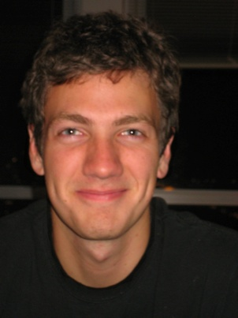

Lane McIntosh
When we read a fictional short story, listen to a lecture, or even just sit down and daydream, we often take for granted that we are intensely subjective biological agents that we truly do not understand. The complex and wildly dynamic three pounds of wet electrical meat - the brain - is an almost intractable modern puzzle, and I find the challenge to explain exactly how information is processed in the brain irresistible.
Currently my research explores the intersection of computational neuroscience, the mathematical theory of information, and aspects of statistical mechanics. In particular, I'm relating the energy efficiency of neurons to how well neurons model input signals. I am also very interested in relating the brain's information theoretic properties to known biophysical models. In particular, we know that neurons in the brain maximize information transmission, but the biophysical model of how neurons optimize information is still unclear. I'm interested in investigating how spike timing-dependent plasticity might arise by pairing this information maximization with biophysical models.
Ph.D. Student, Neurosciences
M.A., Mathematics
University of Hawaii (2010 - 2012)
B.A., Computational Neuroscience, Biological Sciences
The University of Chicago (2006 - 2010)
When we read a fictional short story, listen to a lecture, or even just sit down and daydream, we often take for granted that we are intensely subjective biological agents that we truly do not understand. The complex and wildly dynamic three pounds of wet electrical meat - the brain - is an almost intractable modern puzzle, and I find the challenge to explain exactly how information is processed in the brain irresistible.
Currently my research explores the intersection of computational neuroscience, the mathematical theory of information, and aspects of statistical mechanics. In particular, I'm relating the energy efficiency of neurons to how well neurons model input signals. I am also very interested in relating the brain's information theoretic properties to known biophysical models. In particular, we know that neurons in the brain maximize information transmission, but the biophysical model of how neurons optimize information is still unclear. I'm interested in investigating how spike timing-dependent plasticity might arise by pairing this information maximization with biophysical models.
-

-
University of Hawaii
August '10 - May '12: Mathematics Graduate Student.
Thesis: Information and Energy Dissipation in Neurons. Honolulu, HI.
My M.A. thesis research is an interdisciplinary effort between the Mathematics and Computer Sciences departments at the University of Hawaii, and the Neuromorphic Cognitive Systems Institute at ETH Zurich.
For this project I am concerned with the question of how a system's dissipation of energy relates to how well it models the inputs. In particular we examine spike frequency adaptation in neurons, showing that spike frequency adaptation arises from very simple first principles - an optimization of information processing and the related minimization of energy dissipation. Together with Professor Susanne Still at UH and Professor Giacomo Indiveri at ETH Zurich, I am testing this hypothesis with an adaptive exponential integrate-and-fire neuron model that can qualitatively replicate a wide range of neuron cell types and a silicon implementation of the same neuron model to physically measure the artificial neuron's energy dissipation.-

-
University of Chicago
March '10 - August '10: Technician.
Jason MacLean Lab in the Computational Neuroscience and Neurobiology departments. Chicago, IL.
Our lab researches neural circuitry using 2-photon imaging and (as of this summer) channel rhodopsin. Above all we approach the problem of neuronal connectivity and microcircuit functionality from various computational and mathematical perspectives.
I worked on a neuron classification project that involved designing and extracting electrophysiological metrics for real-time characterization and classification of neurons, in addition to delivering real time information (capacitance, input resistance) about the neuron in question.
I also helped get the lab's channelrhodopsin project off the ground by writing Python and OpenGL graphics software to project a user-generated bit-map of 473nm blue laser/LED light onto a neuronal preparation. The project also involved engineering a development projector for projecting the desired image.-

-
Institute for Advanced Study
June '09 - June '10: Visiting Research Fellow.
Simons Center for Systems Biology at the Institute for Advanced Study. Princeton, NJ.
Arnold Levine's Systems Biology group is a small collection of theoretical physicists, computer scientists, and computational biologists pursuing theoretical research in functional genomics and bioinformatics.
In this research group I worked mainly on two projects - one, developing data mining software to look for copy number variation in immunity-related genes (with Dr. Ben Greenbaum), and the other, looking at the migration pattern of SNPs in Maasai (with physicist Gyan Bhanot).
Papers from both projects are currently submitted.-

-
National Institutes of Health
June '08 - August '08: NIH Fellow in Neuroscience and Neuroengineering.
Professor David Gallo and the Memory Lab. Chicago, IL.
David Gallo's research group focuses on computational fMRI approaches to exploring episodic memory distortion and memory accuracy.
During this summer I demonstrated novel cerebellar involvement in and coordination of episodic memory tasks, using various computational analyses on a database that Prof. Gallo developed at Harvard. This research was presented late August to the NIH peer group at Chicago.-

-
University of Chicago
April '09 - June '09: Neuroeconomics Team Member.
Professors John List and Ali Hortacsu. Chicago, IL.
The Neuroeconomics team developed as an interdisciplinary research initiative between the Department of Economics, Department of Psychology, and the Committee on Computational Neuroscience.
After taking Professor John List's Experimental Economics course, I joined the team and was able to provide neurobiology expertise to John List and Ali Hortacsu, and provide feedback during the graduate analog to the class. The initiative focused on using quantitative fMRI tools to answer fundamental microeconomic and decision-making questions. At the time we were looking at alruism in the dictator game, the effect of experience on the validity of prospect theory, and a few other ideas.-

-
Cytori Therapeutics
June '06 - August '07: Regenerative Cell Technology Team Intern.
Research and Development. San Diego, CA.
Cytori Therapeutics specializes in the research and biomedical application of adult stem cell differentiation.
Over these two summers I worked on experimental super-cooling cryopreservation (resulting in the use of an alternative way of storing stem cells for clinical and experimental use), reverse differenting mesenchymal stem cells from adipose tissue, and had the opportunity of conducting the first company study on the effectiveness of RNA interference for stem cell gene knockout.
In my spare time, I was able to squeeze the occassional surfing lunch break in too. Also, if you're visiting San Diego and are looking for some fantastic Mexican food, check out my recommendations.
-
-
-
-
-